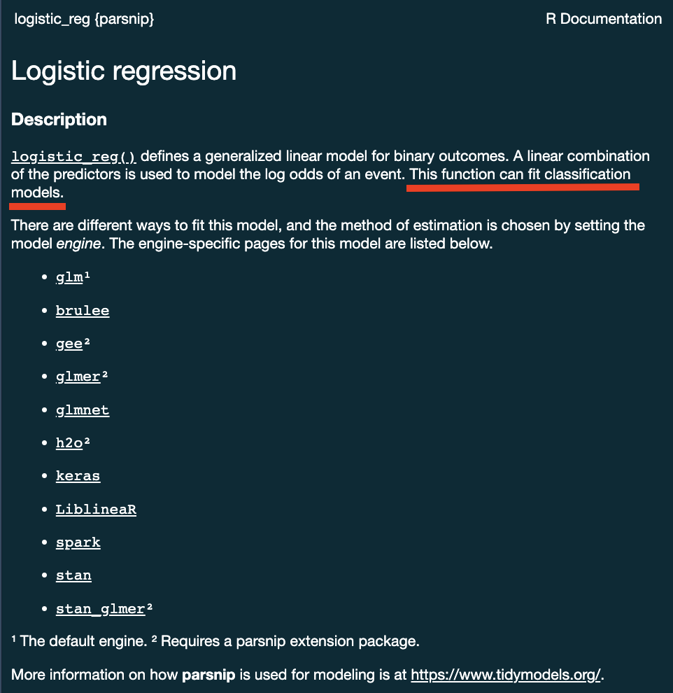

library(tidymodels)
library(forested)
dim(forested)
#> [1] 7107 19Lecture 16
Model Implementation & Workflow
Unit Example
Can we predict if a plot of land is forested? - Interested in classification models - We have a dataset of 7,107 6000-acre hexagons in Washington state. - Each hexagon has a nominal outcome, forested, with levels "Yes" and "No".
Data on forests in Washington
- The U.S. Forest Service maintains ML models to predict whether a plot of land is “forested.”
- This classification is important for all sorts of research, legislation, and land management purposes.
- Plots are typically remeasured every 10 years and this dataset contains the most recent measurement per plot.
- Type
?forestedto learn more about this dataset, including references.

Data on forests in Washington
One observation from each of 7,107 6000-acre hexagons in Washington state.
A nominal outcome,
forested, with levels"Yes"and"No", measured “on-the-ground.”
table(forested$forested)
#>
#> Yes No
#> 3894 3213- 18 remotely-sensed and easily-accessible predictors:
names(forested)
#> [1] "forested" "year" "elevation" "eastness"
#> [5] "northness" "roughness" "tree_no_tree" "dew_temp"
#> [9] "precip_annual" "temp_annual_mean" "temp_annual_min" "temp_annual_max"
#> [13] "temp_january_min" "vapor_min" "vapor_max" "canopy_cover"
#> [17] "lon" "lat" "land_type"
Data splitting and spending
The initial split 
set.seed(123)
forested_split <- initial_split(forested, prop = .8, strata = tree_no_tree)
forested_split
#> <Training/Testing/Total>
#> <5685/1422/7107>Accessing the data
forested_train <- training(forested_split)
forested_test <- testing(forested_split)
nrow(forested_train)
#> [1] 5685
nrow(forested_test)
#> [1] 1422K-Fold Cross-Validation
# Load the dataset
set.seed(123)
# Create a 10-fold cross-validation object
(forested_folds <- vfold_cv(forested_train, v = 10))
#> # 10-fold cross-validation
#> # A tibble: 10 × 2
#> splits id
#> <list> <chr>
#> 1 <split [5116/569]> Fold01
#> 2 <split [5116/569]> Fold02
#> 3 <split [5116/569]> Fold03
#> 4 <split [5116/569]> Fold04
#> 5 <split [5116/569]> Fold05
#> 6 <split [5117/568]> Fold06
#> 7 <split [5117/568]> Fold07
#> 8 <split [5117/568]> Fold08
#> 9 <split [5117/568]> Fold09
#> 10 <split [5117/568]> Fold10How do you fit a linear model in R?
lmfor linear model <– The one we have looked at!glmnetfor regularized regressionkerasfor regression using TensorFlowstanfor Bayesian regression using Stansparkfor large data sets using sparkbruleefor regression using torch (PyTourch)
Challenge
- All of these models have different syntax and functions
- How do you keep track of all of them?
- How do you know which one to use?
- How would you compare them?
Comparing 3-5 of these models is a lot of work using functions for diverse packages.


The tidymodels advantage
- In the
tidymodelsframework, all models are created using the same syntax:- This makes it easy to compare models
- This makes it easy to switch between models
- This makes it easy to use the same model with different engines (packages)
- The
parsnippackage provides a consistent interface to many models - For example, to fit a linear model you would be able to access the
linear_reg() function
?linear_reg
A tidymodels prediction will … 
- always be inside a tibble
- have column names and types are unsurprising and predictable
- ensure the number of rows in
new_dataand the output are the same
To specify a model 
. . .
- Choose a model
- Specify an engine
- Set the mode
Specify a model: Type
Next week we will discuss model types more thoroughly. For now, we will focus on two types:
- Logistic Regression
logistic_reg()
#> Logistic Regression Model Specification (classification)
#>
#> Computational engine: glmdecision_tree()
#> Decision Tree Model Specification (unknown mode)
#>
#> Computational engine: rpartWe chose these two because they are robust, simple model that fit our goal of predicting a binary condition/class (forested/not forested)
Specify a model: engine
- Choose a model
- Specify an engine
- Set the mode
?logistic_reg()
Specify a model: engine
logistic_reg() %>%
set_engine("glmnet")
#> Logistic Regression Model Specification (classification)
#>
#> Computational engine: glmnet. . .
logistic_reg() %>%
set_engine("stan")
#> Logistic Regression Model Specification (classification)
#>
#> Computational engine: stanSpecify a model: mode
- Choose a model
- Specify an engine
- Set the mode
?logistic_reg()
Specify a model: mode
Some models have limit classes …
logistic_reg()
#> Logistic Regression Model Specification (classification)
#>
#> Computational engine: glm. . .
Others requires specification …
decision_tree()
#> Decision Tree Model Specification (unknown mode)
#>
#> Computational engine: rpart
decision_tree() %>%
set_mode("classification")
#> Decision Tree Model Specification (classification)
#>
#> Computational engine: rpartAll available models are listed at https://www.tidymodels.org/find/parsnip/
To specify a model
- Choose a model
- Specify an engine
- Set the mode
Logistic regression
Simulates logistic regression data.
Bins predictorùê¥ and calculates observed probabilities.
Uses binomial proportion tests to estimate probabilities and confidence intervals.
Visualizes these estimates in a scatter plot with error bars.
Logistic regression predicts probability—instead of a straight line, it gives an S-shaped curve that estimates how likely an outcome (e.g., is forested) is based on a predictor (e.g., rainfall and temperature).
The dots in the plot show the actual proportion of “successes” (e.g., is forested) within different bins of the predictor variable(s) (A).
The vertical error bars represent uncertainty—showing a range where the true probability might fall.
As A increases, the probability of success increases—but not in a straight line; it follows an S-curve, meaning small changes in A have different impacts at different levels.
Logistic regression helps answer “how likely” questions—e.g., “How likely is someone to pass based on their study hours?” rather than just predicting a yes/no outcome.
Decision trees
#> Loading required package: rpart
#>
#> Attaching package: 'rpart'
#> The following object is masked from 'package:dials':
#>
#> prune
Decision trees

Series of splits or if/then statements based on predictors
First the tree grows until some condition is met (maximum depth, no more data)
Then the tree is pruned to reduce its complexity
Decision trees


What algorithm is best for estimate forested plots?
We can only really know by testing them …
Logistic regression

Decision trees

Fitting your model:
- OK! So you have split data, you have a model, and you have an engine and mode
- Now you need to fit the model!
- This is done using the
fit()function
dt_model <- decision_tree() %>%
set_engine('rpart') %>%
set_mode("classification")
# Model, formula, data inputs
(output <- fit(dt_model, forested ~ ., data = forested_train) )
#> parsnip model object
#>
#> n= 5685
#>
#> node), split, n, loss, yval, (yprob)
#> * denotes terminal node
#>
#> 1) root 5685 2571 Yes (0.54775726 0.45224274)
#> 2) land_type=Tree 3025 289 Yes (0.90446281 0.09553719) *
#> 3) land_type=Barren,Non-tree vegetation 2660 378 No (0.14210526 0.85789474)
#> 6) temp_annual_max< 13.395 351 155 Yes (0.55840456 0.44159544)
#> 12) tree_no_tree=Tree 91 5 Yes (0.94505495 0.05494505) *
#> 13) tree_no_tree=No tree 260 110 No (0.42307692 0.57692308) *
#> 7) temp_annual_max>=13.395 2309 182 No (0.07882200 0.92117800) *Component extracts:
While
tidymodelsprovides a standard interface to all models all base models have specific methods (remembersummary.lm? )To use these, you must extract a the underlying object.
extract_fit_engine()extracts the underlying model objectextract_fit_parsnip()extracts the parsnip objectextract_recipe()extracts the recipe objectextract_preprocessor()extracts the preprocessor object… many more
ex <- extract_fit_engine(output)
class(ex) # the class of the engine used!
#> [1] "rpart"
# Use rpart plot and text methods ...
plot(ex)
text(ex, cex = 0.9, use.n = TRUE, xpd = TRUE,)A model workflow
Workflows? 
The workflows package in tidymodels helps:
Manage preprocessing and modeling in a structured pipeline
Avoid repetitive code
Reduce errors when integrating steps
. . .
Think of them as containers for:
Preprocessing steps (e.g., feature engineering, transformations)
Model specification
Fitting approaches
. . .
Why Use Workflows?
✅ Keeps preprocessing and modeling together
✅ Ensures consistency in data handling
✅ Makes code easier to read and maintain
Basic Workflow Structure:
Create a workflow object (similar to how
ggplot()instantiates a canvas)Add a formula or recipe (preprocessor)
Add the model
Fit the workflow
A model workflow
dt_wf <- workflow() %>%
add_formula(forested ~ .) %>%
add_model(dt_model) %>%
fit(data = forested_train)#> ══ Workflow [trained] ══════════════════════════════════════════════════════════
#> Preprocessor: Formula
#> Model: decision_tree()
#>
#> ── Preprocessor ────────────────────────────────────────────────────────────────
#> forested ~ .
#>
#> ── Model ───────────────────────────────────────────────────────────────────────
#> n= 5685
#>
#> node), split, n, loss, yval, (yprob)
#> * denotes terminal node
#>
#> 1) root 5685 2571 Yes (0.54775726 0.45224274)
#> 2) land_type=Tree 3025 289 Yes (0.90446281 0.09553719) *
#> 3) land_type=Barren,Non-tree vegetation 2660 378 No (0.14210526 0.85789474)
#> 6) temp_annual_max< 13.395 351 155 Yes (0.55840456 0.44159544)
#> 12) tree_no_tree=Tree 91 5 Yes (0.94505495 0.05494505) *
#> 13) tree_no_tree=No tree 260 110 No (0.42307692 0.57692308) *
#> 7) temp_annual_max>=13.395 2309 182 No (0.07882200 0.92117800) *Predict with your model 
How do you use your new model?
augment()will return the dataset with predictions and residuals added.
dt_preds <- augment(dt_wf, new_data = forested_test)#> # A tibble: 1,422 × 22
#> .pred_class .pred_Yes .pred_No forested year elevation eastness northness
#> <fct> <dbl> <dbl> <fct> <dbl> <dbl> <dbl> <dbl>
#> 1 Yes 0.904 0.0955 No 2005 164 -84 53
#> 2 Yes 0.904 0.0955 Yes 2005 806 47 -88
#> 3 No 0.423 0.577 Yes 2005 2240 -67 -74
#> 4 Yes 0.904 0.0955 Yes 2005 787 66 -74
#> 5 Yes 0.904 0.0955 Yes 2005 1330 99 7
#> 6 Yes 0.904 0.0955 Yes 2005 1423 46 88
#> 7 Yes 0.904 0.0955 Yes 2014 546 -92 -38
#> 8 Yes 0.904 0.0955 Yes 2014 1612 30 -95
#> 9 No 0.0788 0.921 No 2014 235 0 -100
#> 10 No 0.0788 0.921 No 2014 308 -70 -70
#> # ℹ 1,412 more rows
#> # ℹ 14 more variables: roughness <dbl>, tree_no_tree <fct>, dew_temp <dbl>,
#> # precip_annual <dbl>, temp_annual_mean <dbl>, temp_annual_min <dbl>,
#> # temp_annual_max <dbl>, temp_january_min <dbl>, vapor_min <dbl>,
#> # vapor_max <dbl>, canopy_cover <dbl>, lon <dbl>, lat <dbl>, land_type <fct>Evaluate your model 
How do you evaluate the skill of your models?
We will learn more about model evaluation and tuning latter in this unit, but for now we can blindly use the metrics() function defaults to get a sense of how our model is doing.
The default metrics for classification models are accuracy and kap (Cohen’s Kappa)
The default metric for regression models are RMSE, R^2, and MAE
# We have a classification model
metrics(dt_preds, truth = forested, estimate = .pred_class)
#> # A tibble: 2 × 3
#> .metric .estimator .estimate
#> <chr> <chr> <dbl>
#> 1 accuracy binary 0.885
#> 2 kap binary 0.768tidymodels advantage!
- OK! while that was not too much work, it certainly wasn’t minimal.
. . .
Now lets say you want to check if the logistic regression model performs better than the decision tree
That sounds like a lot to repeat.
Fortunately, the
tidymodelsframework makes this a straight forward swap!
. . .
log_mod = logistic_reg() %>%
set_engine("glm") %>%
set_mode("classification")
log_wf <- workflow() %>%
add_formula(forested ~ .) %>%
add_model(log_mod) %>%
fit(data = forested_train)
log_preds <- augment(log_wf, new_data = forested_test)
metrics(log_preds, truth = forested, estimate = .pred_class)
#> # A tibble: 2 × 3
#> .metric .estimator .estimate
#> <chr> <chr> <dbl>
#> 1 accuracy binary 0.890
#> 2 kap binary 0.777So who wins?
metrics(dt_preds, truth = forested, estimate = .pred_class)
#> # A tibble: 2 × 3
#> .metric .estimator .estimate
#> <chr> <chr> <dbl>
#> 1 accuracy binary 0.885
#> 2 kap binary 0.768
metrics(log_preds, truth = forested, estimate = .pred_class)
#> # A tibble: 2 × 3
#> .metric .estimator .estimate
#> <chr> <chr> <dbl>
#> 1 accuracy binary 0.890
#> 2 kap binary 0.777Right out of the gate, there doesn’t seem to be much difference, but …
Don’t get to confident!
- We have evaluated the model on the same data we trained it on
- This is not a good practice and can give us a false sense of confidence
- Instead, we can use our
resamplesto better understand the skill of a model based on the iterative leave out policy:
dt_wf_rs <- workflow() %>%
add_formula(forested ~ .) %>%
add_model(dt_model) %>%
fit_resamples(resamples = forested_folds,
# Here we just ask tidymodels to save all predictions...
control = control_resamples(save_pred = TRUE))#> # Resampling results
#> # 10-fold cross-validation
#> # A tibble: 10 × 5
#> splits id .metrics .notes .predictions
#> <list> <chr> <list> <list> <list>
#> 1 <split [5116/569]> Fold01 <tibble [3 × 4]> <tibble [0 × 3]> <tibble>
#> 2 <split [5116/569]> Fold02 <tibble [3 × 4]> <tibble [0 × 3]> <tibble>
#> 3 <split [5116/569]> Fold03 <tibble [3 × 4]> <tibble [0 × 3]> <tibble>
#> 4 <split [5116/569]> Fold04 <tibble [3 × 4]> <tibble [0 × 3]> <tibble>
#> 5 <split [5116/569]> Fold05 <tibble [3 × 4]> <tibble [0 × 3]> <tibble>
#> 6 <split [5117/568]> Fold06 <tibble [3 × 4]> <tibble [0 × 3]> <tibble>
#> 7 <split [5117/568]> Fold07 <tibble [3 × 4]> <tibble [0 × 3]> <tibble>
#> 8 <split [5117/568]> Fold08 <tibble [3 × 4]> <tibble [0 × 3]> <tibble>
#> 9 <split [5117/568]> Fold09 <tibble [3 × 4]> <tibble [0 × 3]> <tibble>
#> 10 <split [5117/568]> Fold10 <tibble [3 × 4]> <tibble [0 × 3]> <tibble>
Note
tidyr::unnest could be used to expand any of those list columns!
Don’t get to confident!
- We can execute the same workflow for the logistic regression model, this time evaluating the resamples instead of the test data.
log_wf_rs <- workflow() %>%
add_formula(forested ~ .) %>%
add_model(log_mod) %>%
fit_resamples(resamples = forested_folds,
control = control_resamples(save_pred = TRUE))#> # Resampling results
#> # 10-fold cross-validation
#> # A tibble: 10 × 5
#> splits id .metrics .notes .predictions
#> <list> <chr> <list> <list> <list>
#> 1 <split [5116/569]> Fold01 <tibble [3 × 4]> <tibble [0 × 3]> <tibble>
#> 2 <split [5116/569]> Fold02 <tibble [3 × 4]> <tibble [0 × 3]> <tibble>
#> 3 <split [5116/569]> Fold03 <tibble [3 × 4]> <tibble [0 × 3]> <tibble>
#> 4 <split [5116/569]> Fold04 <tibble [3 × 4]> <tibble [0 × 3]> <tibble>
#> 5 <split [5116/569]> Fold05 <tibble [3 × 4]> <tibble [0 × 3]> <tibble>
#> 6 <split [5117/568]> Fold06 <tibble [3 × 4]> <tibble [0 × 3]> <tibble>
#> 7 <split [5117/568]> Fold07 <tibble [3 × 4]> <tibble [0 × 3]> <tibble>
#> 8 <split [5117/568]> Fold08 <tibble [3 × 4]> <tibble [0 × 3]> <tibble>
#> 9 <split [5117/568]> Fold09 <tibble [3 × 4]> <tibble [0 × 3]> <tibble>
#> 10 <split [5117/568]> Fold10 <tibble [3 × 4]> <tibble [0 × 3]> <tibble>Don’t get to confident!
Since we now have an “ensemble” of models (across the folds), we can collect a summary of the metrics across them.
The default metrics for classification ensembles are:
- accuracy: accuracy is the proportion of correct predictions
- brier_class: the Brier score for classification is the mean squared difference between the predicted probability and the actual outcome
- roc_auc: the area under the ROC (Receiver Operating Characteristic) curve
collect_metrics(log_wf_rs)
#> # A tibble: 3 × 6
#> .metric .estimator mean n std_err .config
#> <chr> <chr> <dbl> <int> <dbl> <chr>
#> 1 accuracy binary 0.906 10 0.00360 Preprocessor1_Model1
#> 2 brier_class binary 0.0714 10 0.00191 Preprocessor1_Model1
#> 3 roc_auc binary 0.961 10 0.00164 Preprocessor1_Model1
collect_metrics(dt_wf_rs)
#> # A tibble: 3 × 6
#> .metric .estimator mean n std_err .config
#> <chr> <chr> <dbl> <int> <dbl> <chr>
#> 1 accuracy binary 0.896 10 0.00385 Preprocessor1_Model1
#> 2 brier_class binary 0.0889 10 0.00224 Preprocessor1_Model1
#> 3 roc_auc binary 0.909 10 0.00267 Preprocessor1_Model1Further simplification: workflowsets
OK, so we have streamlined a lot of things with tidymodels:
We have a specified preprocesser (e.g. formula or recipe)
We have defined a model (complete with engine and mode)
We have implemented workflows pairing each model with the preprocesser to either fit the model to the resamples, or, the training data.
While a significant improvement, we can do better!
Does the idea of implementing a process over an list of elements ring a bell?
Model mappings: 
workflowsetsis a package that builds off ofpurrrand allows you to iterate over multiple models and/or multiple resamplesRemember how
map,map_*,map2, andwalk2functions allow lists to map to lists or vectors?workflow_setmaps a preprocessor (formula or recipe) to a set of models - each provided as alistobject.To start, we will create a
workflow_setobject (instead of aworkflow). The first argument is a list of preprocessor objects (formulas or recipes) and the second argument is a list of model objects.Both must be lists, by nature of the underlying
purrrcode.
(wf_obj <- workflow_set(list(forested ~.), list(log_mod, dt_model)))
#> # A workflow set/tibble: 2 × 4
#> wflow_id info option result
#> <chr> <list> <list> <list>
#> 1 formula_logistic_reg <tibble [1 × 4]> <opts[0]> <list [0]>
#> 2 formula_decision_tree <tibble [1 × 4]> <opts[0]> <list [0]>Iteritive extecution
Once the
workflow_setobject is created, theworkflow_mapfunction can be used to map a function across the preprocessor/model combinations.Here we are mapping the
fit_resamplesfunction across theworkflow_setcombinations using theresamplesargument to specify the resamples we want to use (forested_folds).
wf_obj <-
workflow_set(list(forested ~.), list(log_mod, dt_model)) %>%
workflow_map("fit_resamples", resamples = forested_folds) #> # A workflow set/tibble: 2 × 4
#> wflow_id info option result
#> <chr> <list> <list> <list>
#> 1 formula_logistic_reg <tibble [1 × 4]> <opts[1]> <rsmp[+]>
#> 2 formula_decision_tree <tibble [1 × 4]> <opts[1]> <rsmp[+]>Rapid comparision
With that single function, all models have been fit to the resamples and we can quickly compare the results both graphically and statistically:
# Quick plot function
autoplot(wf_obj) +
theme_linedraw()# Long list of results, ranked by accuracy
rank_results(wf_obj,
rank_metric = "accuracy",
select_best = TRUE)
#> # A tibble: 6 × 9
#> wflow_id .config .metric mean std_err n preprocessor model rank
#> <chr> <chr> <chr> <dbl> <dbl> <int> <chr> <chr> <int>
#> 1 formula_logisti… Prepro… accura… 0.906 0.00360 10 formula logi… 1
#> 2 formula_logisti… Prepro… brier_… 0.0714 0.00191 10 formula logi… 1
#> 3 formula_logisti… Prepro… roc_auc 0.961 0.00164 10 formula logi… 1
#> 4 formula_decisio… Prepro… accura… 0.896 0.00385 10 formula deci… 2
#> 5 formula_decisio… Prepro… brier_… 0.0889 0.00224 10 formula deci… 2
#> 6 formula_decisio… Prepro… roc_auc 0.909 0.00267 10 formula deci… 2. . .
Overall, the logistic regression model appears to the best model for this data set!
The whole game - status update

Next Monday, we’ll talk more about models we can chose from.
Next Wednesday, we’ll have an in-class demo of this whole process.
Assignment
- Open your R script from the last daily assignment
- Add a new section for the model fitting and workflow
- Define a logistic regression model and a
rand_forestmodel
rand_forestis new, so, think about the engine (use the default) and mode needed for our problem
- Set up a
workflow_set()to compare the logistic regression model (the winner of lecture here) to therand_forestmodel you create. Useaccuracyas you primary metric to rank the models. - As a comment, write a sentence about what model you think is best!
- Submit your R script to Canvas